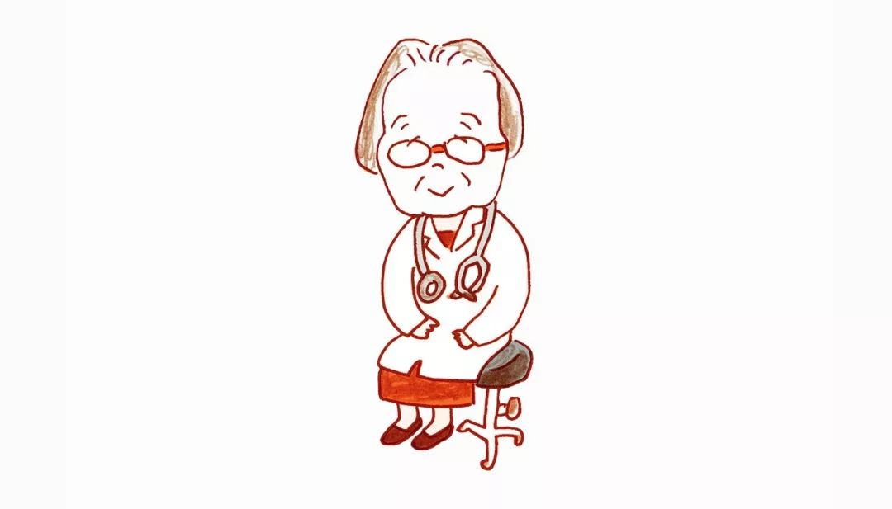

第 1 章：工作是为了什么
从本质上来说，人就是为了生活而工作。
在我看来，为了钱而工作，并不是可耻的事情，这是理所当然的事，我认为是非常了不起的。
赚多少钱倒没那么重要，如果能够支撑自己和家人的日常生活，这就足够了。人生，就是这样活着而已。
至于“人生价值”“自我成长”之类，是要等自己立足安稳后，在闲暇之余慢慢思考的问题。人生很长，慢慢思考就好了。
有些人痛苦地向我倾诉，说自己“在现在的公司没有发展”，或者“失去了工作的目标”。我认为，这些可能都是想得太多的缘故。
如果被权力、地位、名誉之类的东西紧紧束缚住，在工作中一味地在意别人的眼光，很快就会疲于应对。要是这般勉强度过几十年，迟早会被工作击垮。
我不关心头衔和职位，这些都如过眼云烟。如果自己和家人健康、精力充沛，有几个知己可以交谈，还有什么其他奢望呢？
相反，如果你拼命工作，身体状况因此变得糟糕，自己和家人关系疏远，即使你挣了很多钱，那又有什么幸福可言？
不要把自我价值全部建立在工作上，带着“为身边的人略尽绵力”的想法去工作，或许会更好。
工作中的人际关系比工作内容重要得多。从我的经验来看，不喜欢工作的大多数是人际关系出了问题。对有些人而言，不管他们做什么工作，他们都讨厌工作，这也许是与人交往上出现了问题。
过多的“空闲”，有时会带来负面影响，“适当忙碌”的状态反而更好。
如果工作让你一直做出巨大的牺牲，那一定要果断离开，毫不犹豫。
我并不提倡过度工作，甚至过劳死。公司不过是“别人赚钱的工具”，如果这个工具紧紧地束缚住了自己的宝贵生命或家人的幸福，那么逃离也无妨。一旦决定“逃离”，你应该自信地离开。
习惯遇事不抱怨，依靠自己解决，无论发生什么事情，你都能想办法解决。
如果工作让你一直做出巨大的牺牲，那一定要果断离开，毫不犹豫。
第 2 章：不要期待过多，对生活中的小事心存感激
过于强调“应该如此”而拼命努力，多半是因为欲望过高。此外，欲望过高的本质，或是“想被人称赞自己努力上进真厉害”
在人生中，很多事情不会按照你的想法发生，这会让我们感觉很痛苦。
人生不可思议之处在于，即使去了新环境，也会遇到讨厌的人、合不来的人，尽管程度不同，但或多或少都会出现。
不要试图通过改变他人来获得快乐，而是想“自己如何做才会快乐”或“怎么努力让自己在这里心情愉快地度过”，我觉得这才是应该考虑的关键。
人生的本质就是一个人活着。
人际关系是无法预测的。人与人之间可能因为一些小事而结缘，也会因一些小事分离。人会快速地向着有利于自己的方向前行，由于时间或距离的原因不能见面，缘分也会渐渐变浅。这就是人际关系。
“情”这个东西看起来是一件好事，但从另一方面来说，它会让你对别人产生期待、执着，让你在关系中变得“自私”。
不要有太多的期望。
只要是别人给予的东西，自己就应该感谢对方
在一生中，任何人都会遇到几次大的转折点，也就是人生的十字路口。
总想着得失，那么就会觉得勉强自己，甚至产生心结。与其如此，还不如率性而为，跟随心的决定。
第 3 章：恰到好处的人际关系
即使你不能给出建议，没有提供令人豁然开朗的方法，就是简简单单设身处地地倾听，对方也会轻松许多。
如果被人说了不好的话，就不妨想想“那家伙在家里有什么惹他烦心的事吗？”，也许心情就会好转。
无论是费劲地想要主动交往，还是试图引起对方的关注，都显得不自然、不正常。
当你想到“自己这么努力，为什么没有得到回报”，也许对待别人就会变得苛刻。
第 4 章：让心归于平静
人为什么会感到不安？大多数情况下，这种不安是因为对未来考虑太多。
我认为，只要想清楚今天一天的事情就可以了。
任何事物都有两面性，痛苦的经历可以扩展人的本性，就像肌肉可以锻炼、拉伸一样。
如果总也不顺利，那么你就要意识到，“人生本来就是这样”。
保持心平气和的另一个有效方法，就是“工作时间以外，不考虑工作上的事”
在非工作时间，尽量不要考虑工作上的事。
自信绝非一成不变的，我们只能在某一段时间或某一领域经历它。
总而言之，不被负面情绪影响的最大秘诀就是好好生活
痛苦与伤心，其实也是与生俱来的东西。人活着，肯定会经历苦难。
不要事事都想咬紧牙关挺过去，只要抱着“今天这样做基本就可以了”的态度，日复一日地坚持积累。
第 5 章：生活和工作的平衡之道
在我看来，与其追求完美而挫折不断，不如以笨拙的方式坚持下去。
如果母亲的情绪不稳定，孩子的精神状态就会受到影响。
父母的心情会扰乱孩子的内心，孩子的波动反过来又会反弹给父母。
有多种选择的时候我们往往左右瞻顾，当“只有一个选择”的时候，反而会意外地突破现状。
生活如果没有目标，就会变得懒散。一旦决定“今天这样做”，生活一下子就会张弛有度。
家庭问题能忍耐就忍耐，工作方面能放松就放松。
我非常推荐大家和同事一起出去玩，你可以发现同事在工作之外的真性情，也可以与趣味相投的人成为好朋友。
提醒别人的事情，自己如果做不到，更加不好。即使是孩子，也会看穿大人的一言一行。因此，要想改变孩子，首先得改变自己。这样，通过育儿，也会注意到自己一些为人处事的方式。
育儿基本的原则是，对待大人和孩子一视同仁。
孩子成长的每个过程，比任何一部动漫或电影都令人感动。
最关键的是，父母应该真心为孩子的幸福考虑，并付诸行动。这样做，才能将爱传递给孩子
父母和孩子的人生车轮虽然驶向不同的方向，由于桥梁的存在，你们可以随时往来。
担心死亡来临、提前做好计划终究无济于事。把最基本的要求告诉家人，其余的事情顺其自然就可以。
第 6 章：简单生活每一天
在追求的过程中，一定要分清自己是自己，他人在实践他人的人生，我们不需要追寻别人的脚步。
越是对别人讨厌、反感，这些情绪就越容易在自己的表情和态度上反映出来，进而传达给对方。
由于过于害怕孤独，就会迎合别人，或者对别人妥协，从而使自己痛苦不已。
若想人际关系变好，就更应该珍惜一个人的时光。也许，这才是最根本、最重要的事情。
“对患者来说，能接待他们的医生很多；但对孩子而言，母亲只有一个
和周围的人交往要保持适当的距离，这是维系和谐关系的关键。我们也是有感情的人，在不知不觉中平衡就会被打破。
或许是对别人期待太多，或许是对自己太过严苛，总之与他人交往总会有感觉不舒服的时候。
人生的满足感并非由别人决定，也绝不应该追求和别人同样的生活。